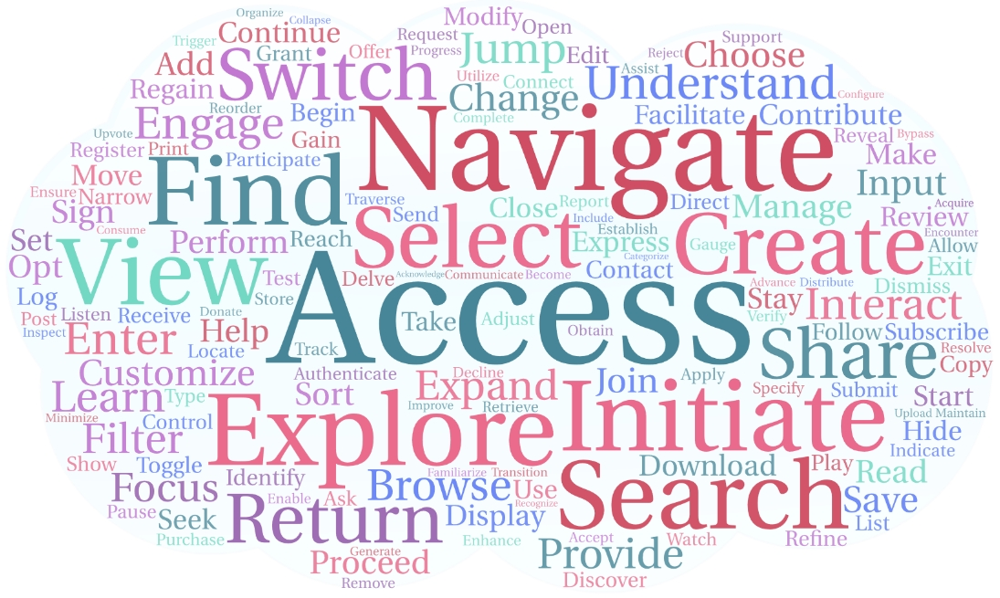

AutoGUI:
Scaling GUI Grounding with Autonomous Functionality Annotations from LLMs
Scaling GUI Grounding with Autonomous Functionality Annotations from LLMs
Hongxin Li1,2*, Jingran Sui3,4*, Jingran Su3,4*, Yuntao Chen3†, Qing Li4, Zhaoxiang Zhang1,2,3,5
1School of Artificial Intelligence, University of Chinese Academy of Sciences (UCAS)
2State Key Laboratory of Multimodal Artificial Intelligence Systems (MAIS), Institute of Automation, Chinese Academy of Sciences
3Centre for Artificial Intelligence and Robotics (CAIR), Hong Kong Institute of Science & Innovation, Chinese Academy of Sciences
4The Hong Kong Polytechnic University
5Shanghai Artificial Intelligence Laboratory
*Equal contribution.
†Corresponding
AutoGUI provides high-quality functionality annotations for User Interface (UI) elements in a scalable🚀 manner, establishing itself as a cornerstone for building intelligent UI agents.
Abstract
User interface understanding with vision-language models has received much attention due to its potential for enabling next-generation software automation. However, existing UI datasets either only provide large-scale context-free element annotations or more contextualized functional descriptions for elements at a much smaller scale. In this work, we propose the AutoGUI pipeline for automatically annotating UI elements with detailed functionality descriptions at scale. Specifically, we leverage large language models (LLMs) to infer element functionality by comparing the UI source code changes before and after simulated interactions with specific UI elements. We construct an AutoGUI-627k dataset using the proposed pipeline, featuring multi-resolution, multi-device screenshots, diverse data domains, and detailed functionality annotations. Furthermore, we propose a spatially-aware instruction tuning approach for enhancing the grounding ability of UI vision-language models (UI-VLMs). Extensive experimental results demonstrate the superiority of our AutoGUI-627k dataset compared to existing web pre-training methods and the effectiveness of the proposed spatially-aware instruction tuning approach.
Updates
- 2024-6-14: AutoGUI-v1 released.
Overview of AutoGUI Dataset
AutoGUI contains 627k UI grounding/captioning tasks involving 861 domains from Common Crawl. Different from exsiting UI datasets, AutoGUI provides abundant UI functionality annotations and focuses on functionality grounding/captioning tasks. Moreover, these tasks are all automatically generated without human experts.
Each sample in the training set serves as either a grounding or captioning task, containing the following information:
-
Functionalitythat describes the contextual functionality of an element. -
Target Elementthat provides the attributes of the element associated with the functionality label. - Element Position: the original bounding box coordinates
[left,top,right,bottom]as well as the center point(X,Y)normalized within the range 0-100 are provided. - Element Text: The displayed text of alt-text of the element.
- Device Type: Whether the task is collected in a view of a web browser or mobile phone.
UI Screenshotthat records the UI image on which the element is displayed:
Dataset Comparison
AutoGUI distinguishes itself from existing dataset by providing functionality-rich data as well as tasks that require VLMs to discern the functionalities of substantial elements to achieve high grounding accuracy.
| Dataset | UI Type | Multi-Res | Real-world Scenario |
Autonomous Annotation | Functionality Sementics | #Annotations | UI Task |
|---|---|---|---|---|---|---|---|
| WebShop | Web | ✖ | ✖ | ✖ | ✖ | 12k | Web Navigation |
| Mind2Web | Web | ✖ | ✔ | ✖ | ✖ | 2.4k | Web Navigation |
| WebArena | Web | ✖ | ✔ | ✖ | ✖ | 812 | Web Navigation |
| Screen2Words | Mobile | ✖ | ✔ | ✖ | ✖ | 112k | UI Summarization |
| Widget Captioning | Mobile | ✖ | ✔ | ✖ | ✖ | 163k | Element Captioning |
| PixelHelp | Mobile | ✖ | ✔ | ✖ | ✖ | 187 | Element Grounding |
| RICOSCA | Mobile | ✖ | ✔ | ✖ | ✖ | 295k | Action Grounding |
| MoTIF | Mobile | ✖ | ✔ | ✖ | ✖ | 6k | Mobile Navigation |
| AITW | Mobile | ✖ | ✔ | ✖ | ✖ | 715k | Mobile Navigation |
| RefExp | Mobile | ✖ | ✔ | ✖ | ✖ | 20.8k | Element Grounding |
| VisualWebBench | Web | ✖ | ✔ | ✖ | ✖ | 1.5k | UI Grounding & Referring |
| SeeClick Web | Web | ✖ | ✔ | ✔ | ✖ | 271k | Element Grounding |
| UI REC/REG | Web | ✔ | ✔ | ✔ | ✖ | 400k | Box2DOM, DOM2Box |
| Ferret-UI | Mobile | ✔ | ✔ | ✔ | ✖ | 250k | UI Grounding & Referring |
| AutoGUI (ours) | Web, Mobile | ✔ | ✔ | ✔ | ✔ | 627k | Functionality Grounding & Captioning |
Explore the AutoGUI Dataset
The following explorer allows you to look into several examples of the training data. You can click the dashed blue box to view its functionality annotation generate by our AutoGUI pipeline.
AutoGUI Characteristics
Diversity of the verb-noun phrases of the AutoGUI dataset. The top 10 verbs and their top 5 following nouns are displayed to show that our dataset involve diverse UI functionalities.
The word cloud below illustrates the relative frequencies of the verbs that represent the primary intended actions described in the functionality annotations.

Disclaimer
This dataset has been compiled and disseminated exclusively for research purposes, with the objective of enhancing web accessibility through the application of language technologies. Any comercial use of the data is not permitted.